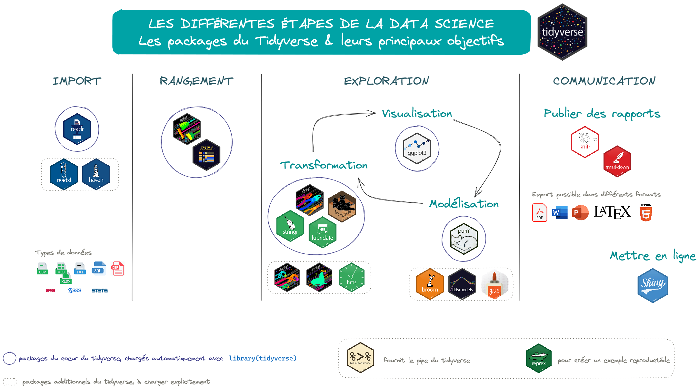
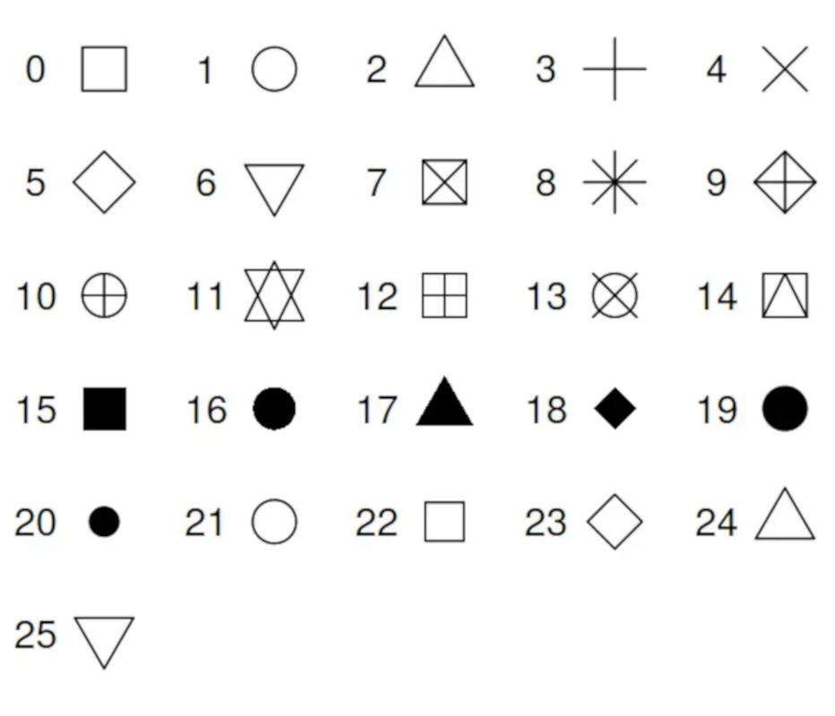

Visualisation avec 

Introduction
Objectifs
Découvrir comment visualiser ses données sous R :
- produire des tableaux
- produire des graphiques avec ce logiciel
Utiliser R permet de travailler de façon reproductible
= selon un processus qui peut être reproduit par une autre personne et/ou à partir des mêmes données mises à jour
Plan du cours
Pour bien commencer
Quelques conseils pour un travail reproductible
La reproductibilité
Repose sur trois grands principes, qui interagissent entre eux et sont non séquentiels (Orozco et al. 2020) :
- Organiser le travail
- Coder pour les autres
- Automatiser le plus possible
\(\Rightarrow\) pour avoir la capacité à reproduire, expliquer et partager les éléments clés utilisés dans le processus
Organiser son travail
- Travail avec des programmes/scripts, pour enregistrer l’ensemble du code, qui peut ensuite être exécuté par bouts ou dans son intégralité
- Structure de répertoires pour séparer données brutes, données créées, programmes, documentation et résultats \(\Rightarrow\) ensemble clair des programmes et des données
- Convention de dénomination des fichiers
On préconise la structure de nom suivante : numero -- nom -- millesime, sans symboles spéciaux (-.,;:\/$^, caractères accentués, etc.)
Exemple : 01_import_donnees_20230606.R
- Stratégie de différenciation fichiers mis à jour/anciens fichiers
- Comparaison facile des différentes versions du code
- Le cas échéant, organisation du partage des documents et programmes avec les collègues
- Conservation des idées et tests et le cas échéant, des notes et conversations avec les collègues
- Mise en oeuvre d’une procédure de sauvegarde
Coder pour les autres (1/2)
- Noms d’objet/fonctions explicites
- Utilisation d’une convention pour les variables créées par rapport à celles d’origine
- Utilisation des chemins relatifs dans les programmes
- Possibilité d’exécuter le code sur un autre ordinateur
- Code aussi générique que possible
- Code commenté
- Code compréhensible sans autre documentation
Coder pour les autres (2/2)
On préconise d’utiliser un
nompour les variables et unverbepour les fonctions
Exemple :temperature_max
Exemple :create.mapserait une fonction qui permettrait de créer une cartePour les variables, comme pour les fonctions, il est recommandé :
- de ne pas utiliser
TouF(abréviations deTRUEetFALSE), ni de noms qui sont déjà des fonctions du langage utilisé
- de débuter le nom par une lettre
- de constituer le nom avec uniquement des lettres (non accentuées) ou des chiffres, des underscores (
_) ou encore des points (.) mais sans espaces
- de ne pas utiliser
Conventions de nommage
- allowercase : tout en minuscule, sans séparateur
- period.separated : tout en minuscule, mots séparés par des points
- underscore_separated : tout en minuscule, mots séparés par un underscore (
_)
- lowerCamelCase : première lettre des mots en majuscule, à l’exception du premier mot
- UpperCamelCase : première lettre des mots en majuscule, y compris le premier et même lorsque le nom est composé d’un seul mot
- allowercase : tout en minuscule, sans séparateur
Possibilité de mixer les conventions, en gardant une cohérence dans la rédaction du code
Automatiser le plus possible
- Code enregistré dans un format lisible
- Le copier-coller est évité
- Identification facile de l’ordre d’exécution des programmes
- Le processus de création de chaque tableau, figure et résultat du document est facile à suivre
- La ré-exécution de tous les programmes est facile
Ces grands principes sont valables quel que soit le langage de programmation
Les logiciels  et
et 

Le logiciel R
- Un logiciel de calcul scientifique interactif et interprété, dédié aux analyses statistiques et aux visualisations de données, libre, gratuit, constamment mis à jour et amélioré
- Un langage de programmation open source
- Compatible avec la plupart des systèmes d’exploitation (Windows, MacOS, Linux)
- Disponible en téléchargement sur le site du CRAN (Comprehensive R Archive Network) : http://cran.r-project.org
Ressources en ligne
- Sur le site du CRAN, des manuels https://cran.r-project.org/manuals.html ou autres contributions https://cran.r-project.org/other-docs.html
- Le site R project http://www.r-project.org
- Un moteur de recherche Rseek dédié à R http://www.rseek.org
- Une liste de ressources francophones frrrenchies https://github.com/frrrenchies/frrrenchies
- Le site StackOverflow http://stackoverflow.com/questions/tagged/r
- Le site R-bloggers https://www.r-bloggers.com
- La revue en ligne R journal https://journal.r-project.org
- La revue Journal of Statistical Software http://www.jstatsoft.org/
Le logiciel RStudio
- Conçu spécialement pour R
- Version “locale” RStudio Desktop ou “serveur” RStudio Server https://posit.co/downloads/
- Installer R avant d’installer RStudio
- Accès à des fiches synthétiques Cheatsheets pour certains packages : directement via la page d’accueil de la fenêtre d’aide de RStudio ou sur sur le site de RStudio https://rstudio.com/resources/cheatsheets
- Extensions (addins) pour simplifier certaines manipulations https://github.com/daattali/addinslist
addinslist: parcourir et installer les addins de RStudio
colourpicker: sélectionner une couleur dans les graphiques
esquisse: créer un graphique ggplot2
questionr: discrétiser une variable ; réordonner ou recoder un facteur
remedy: simplifier l’écrituremarkdown(convertir le texte sélectionné en titre1, titre2, etc.)
ReplaceInFiles: rechercher et remplacer une valeur dans plusieurs fichiers
strcode: structurer le code (sauts de section avec titre en en-tête)
viewxl: voir les data.frames sous Excel en un clic
Pourquoi travailler avec les projets RStudio ? (1/2)
- Répertoire par défaut d’un projet = répertoire où est stocké le projet
- Tout ce qui est lié au projet est dans un seul répertoire
Exemples d’arborescences
Source : https://learn.r-journalism.com/en/publishing/workflow/r-projects/
Chacun s’organisera de la façon qu’il juge la plus adaptée à ses usages… mais les dossiers “data”, “scripts”, “plot”, “output” et “doc” sont indispensables !
Pourquoi travailler avec les projets RStudio ? (2/2)
- Portabilité améliorée puisque l’exécution d’un script ne dépend plus de l’arborescence
- Possibilté de travailler sur plusieurs projets simultanément
- Utilisation possible de renv : intègre dans un projet l’ensemble des packages nécessaires à l’exécution de celui-ci, dans la version qui a fait tourner le projet
- Versioning avec Git possible, voire recommandé
Créer un projet sous RStudio (1/2)
À partir de l’icône dédiée en haut à droite de RStudio

Créer un projet sous RStudio (2/2)
Sélectionner l’option “New project”, puis l’option “New Directory” et enfin “Empty Project”


- L’utilisation de projets RStudio facilite la lecture et à l’exportation de données
- Ne pas oublier : le plus important, ce sont les données initiales et les scripts de traitements
Écrire un script (1/3)
- Commencer par les métadonnées du fichier : titre, auteur, date, version de R, encodage, etc.
- Poursuivre avec le chargement de l’ensemble des packages nécessaires , en notant la version utilisée
- Charger les données nécessaires pour l’analyse
- Faire les traitements en structurant le code en parties, sous-parties, grâce
au raccourciCTRL + MAJ + R
ou à l’addin strcode
Écrire un script (2/3)
- Faire des retours à la ligne régulièrement : longueur max 80 caractères
- Utiliser le pipe (
%>%ou|>) pour afficher une seule instruction par ligne
- Indenter le code avec
TABet réindenter les lignes sélectionnées avecCtrl+I
- Utiliser
<-(ou->) comme opérateur d’affectation et non pas le=
- Entourer d’espaces les opérateurs qui lient les objets entre eux
=+-<-
- Ne pas entourer d’espaces les opérateurs qui modifient un objet ou qui en sélectionnent une partie
::$@[][[]]()
- Insérer un espace après la virgule mais pas avant, comme en français !
Écrire un script (3/3)
Aides pour écrire les scripts
- Tidyverse Style Guide https://style.tidyverse.org/index.html
- Activer les options de diagnostic pour signaler les erreurs dans les scripts sous RStudio : Tools -> Global Options -> Code -> Diagnostics
- package styler : remodeler de manière interactive du texte sélectionné, des fichiers ou des projets entiers, avec un addin
RStudiopour faciliter l’usage - package lintr : effectuer des vérifications automatiques pour confirmer que le code écrit est conforme au guide de style
Le tidyverse
Présentation générale
- Ensemble de packages, basés sur une syntaxe commune
- Conçu par Hadley Wickham et son équipe
- Objectif = nettoyer et travailler avec des données
- Reprend un grand nombre d’opérations courantes de R, de façon unifiée et cohérente
- Installation avec la commande
install.packages("tidyverse")= installation simultanée de plusieurs packages
Les 9 packages actuels du coeur du tidyverse
- dplyr : manipulation des données
- forcats : traitement des variables qualitatives
- ggplot2 : visualisation des données
- lubridate : manipulation des dates et heures
- purrr : programmation
- readr : import de données
- stringr : manipulation des chaînes de caractères
- tibble : tableaux de données, sous une autre forme
- tidyr : nettoyage, remise en forme des données
Les packages additionnels
- Import des données
- readxl : pour les fichiers Excel (.xls ou .xlsx)
- haven : pour les fichiers de données provenant de SPSS, SAS et Stata
- readxl : pour les fichiers Excel (.xls ou .xlsx)
- Manipulation des données
- dbplyr : pour utiliser les tables de bases de données en convertissant le code
dplyrenSQL
- dtplyr : pour concilier tibble et data.table
- hms : pour la manipulation des heures – minutes – secondes
- dbplyr : pour utiliser les tables de bases de données en convertissant le code
- Programmation
- broom : pour résumer les informations clés sur les modèles dans des tibbles bien rangés
- glue : une alternative à
pastequi facilité la combinaison de données et de chaînes de caractères
- magrittr : fournit le pipe du
tidyverse
- tidymodels : métapackage qui fournit une syntaxe de modélisation unifiée
- broom : pour résumer les informations clés sur les modèles dans des tibbles bien rangés
Depuis la version 4.1.0 de R, un pipe a été implémenté dans le langage R de base. Sa syntaxe est |>
Des packages compatibles, utiles pour communiquer
- knitr et rmarkdown : environnements de programmation lettrée (texte et code R mêlés)
- shiny : création des pages web interactives
- reprex : création d’exemples reproductibles
- Les fichiers Rmarkdown peuvent être utilisés pour réaliser :
- des présentations (avec le package slidify)
- des tableaux de bord (avec shiny)
- du contenu pour un site web (package blogdown)
- ou encore pour écrire un article une publication ou un livre (package bookdown)
- quarto
- applique le même principe de programmation lettrée que Rmarkdown
- permet d’exploiter différents langages de programmation tels que R, Python, Julia ou JavaScript
L’univers du tidyverse

Import & export des données
Import de données
| Type de fichier | Séparateur de colonnes | Séparateur décimal | Base R | Tidyverse |
|---|---|---|---|---|
| Délimité | , |
. |
read.csv() |
readr::read_csv() |
; |
, |
read.csv2() |
readr::read_csv2() |
|
| un espace (ou plus) | . |
read.table() |
readr::read_table() |
|
\t |
. |
read.delim() |
readr::read_delim() |
|
\t |
, |
read.delim2() |
readr::read_delim2() |
|
| Excel | xlsx::read.xlsx() |
readxl::read_excel() |
||
| SPSS | foreign::read.spss() |
haven::read_spss() |
||
haven::read_sav() |
||||
| Stata | foreign::read.dta() |
haven::read_stata() |
||
| SAS | foreign::read.ssd() |
haven::read_sas() |
||
| dBase | foreign::read.dbf() |
- |
Exemples pour les fichiers délimités
Fichier csv
Les fonctions read.csv2() et readr::read_csv2() considèrent par défaut que le séparateur est le point-virgule et que la virgule sert de séparateur décimal
Fichier txt
Fichier txt
Exemples pour les fichiers Excel
Export de données
| Type de fichier souhaité | Base R | Tidyverse |
|---|---|---|
| .txt | write.table() |
readr::write_delim(delim = "\t") |
| .csv | write.csv() |
readr::write_csv() |
| .xlsx | xlsx::write.xlsx() |
- |
| .dbf | foreign::write.dbf() |
- |
| .sav (SPSS) | foreign::write.foreign(package = "SPSS") |
haven::write_sav() |
| .dta (Stata) | foreign::write.dta() |
haven::write_dta() |
Manipulation de tableaux de données et de variables
“Ranger” les données
Jeu de données “rangé” = fichier où
- chaque variable est dans une colonne
- chaque observation est dans une ligne
- chaque valeur est dans une cellule

Source : Wickham et Grolemund (2018)

Le package dplyr (1/7)
- Filtrer des lignes avec
filter()
# Sélection des lignes pour lesquelles Sepal.Length est supérieure à 7.5
iris %>%
dplyr::filter(Sepal.Length > 7.5) Sepal.Length Sepal.Width Petal.Length Petal.Width Species
1 7.6 3.0 6.6 2.1 virginica
2 7.7 3.8 6.7 2.2 virginica
3 7.7 2.6 6.9 2.3 virginica
4 7.7 2.8 6.7 2.0 virginica
5 7.9 3.8 6.4 2.0 virginica
6 7.7 3.0 6.1 2.3 virginicaOn peut passer plusieurs arguments à filter(), avec les opérateurs & (ET) et | (OU)
# Sélection des lignes pour lesquelles Sepal.Length est supérieure à 5 et Petal.Length inférieure à 1.5
iris %>%
dplyr::filter(Sepal.Length > 5 & Petal.Length < 1.5) Sepal.Length Sepal.Width Petal.Length Petal.Width Species
1 5.1 3.5 1.4 0.2 setosa
2 5.8 4.0 1.2 0.2 setosa
3 5.4 3.9 1.3 0.4 setosa
4 5.1 3.5 1.4 0.3 setosa
5 5.2 3.4 1.4 0.2 setosa
6 5.5 4.2 1.4 0.2 setosa
7 5.5 3.5 1.3 0.2 setosaOpérateurs logiques les plus courants
| Opérateur | Description |
|---|---|
< |
Inférieur à |
<= |
Inférieur ou égal à |
> |
Supérieur à |
>= |
Supérieur ou égal à |
== |
Exactement égal à |
!= |
Différent de |
| |
Ou |
& |
Et |
%in% |
Appartient à |
is.na() |
Est une donnée manquante |
Le package dplyr (2/7)
- Sélectionner une colonne (variable) avec
pull()ouselect()
[1] setosa setosa setosa setosa setosa
Levels: setosa versicolor virginica Species
1 setosa
2 setosa
3 setosa
4 setosa
5 setosaQuelle différence ?
pull()renvoie une seule colonne sous forme de vecteur
select()renvoie une ou plusieurs colonnes sous forme de data.frame
Le package dplyr (3/7)
- Sélectionner plusieurs colonnes (variables) avec
select()
Sepal.Length Sepal.Width Petal.Length Petal.Width
1 5.1 3.5 1.4 0.2
2 4.9 3.0 1.4 0.2
3 4.7 3.2 1.3 0.2
4 4.6 3.1 1.5 0.2
5 5.0 3.6 1.4 0.2 Petal.Length Sepal.Length
1 1.4 5.1
2 1.4 4.9
3 1.3 4.7
4 1.5 4.6
5 1.4 5.0On peut faire les tests sur les noms de variables avec les fonctions contains(), starts_with(), ends_with() ou encore matches()
Plus d’infos sur ces fonctions et les autres fonctions disponibles sur la page d’aide de la fonction select() du package dplyr
Le package dplyr (4/7)
- Renommer des colonnes avec
rename()
Sepal.Length Sepal.Width Petal.Length Petal.Width Especes
1 5.1 3.5 1.4 0.2 setosa
2 4.9 3.0 1.4 0.2 setosa
3 4.7 3.2 1.3 0.2 setosa
4 4.6 3.1 1.5 0.2 setosa
5 5.0 3.6 1.4 0.2 setosa- Trier les observations selon une ou plusieurs colonnes avec
arrange()
Sepal.Length Sepal.Width Petal.Length Petal.Width Species
1 7.9 3.8 6.4 2.0 virginica
2 7.7 3.8 6.7 2.2 virginica
3 7.7 2.6 6.9 2.3 virginica
4 7.7 2.8 6.7 2.0 virginica
5 7.7 3.0 6.1 2.3 virginicaLe package dplyr (5/7)
- Créer de nouvelles variables avec
mutate()
Sepal.Length Sepal.Width Petal.Length Petal.Width Species Length Width
1 5.1 3.5 1.4 0.2 setosa 6.5 3.7
2 4.9 3.0 1.4 0.2 setosa 6.3 3.2
3 4.7 3.2 1.3 0.2 setosa 6.0 3.4
4 4.6 3.1 1.5 0.2 setosa 6.1 3.3
5 5.0 3.6 1.4 0.2 setosa 6.4 3.8Le package dplyr (6/7)
- Résumer (ou agréger) les données sur une ou plusieurs variables avec
summarise()à l’aide d’indicateurs
# résumé selon une seule variable : calcul de la moyenne de Sepal.Lenth
iris %>%
summarise(mean(Sepal.Length, na.rm = TRUE)) mean(Sepal.Length, na.rm = TRUE)
1 5.843333# Résumé selon plusieurs variables :
# Calcul des moyennes de toutes les variables du tableau qui contiennent la chaîne de caractères 'Width'
iris %>%
select(contains('Width')) %>%
summarise_all(mean, na.rm = TRUE) Sepal.Width Petal.Width
1 3.057333 1.199333# Résumé selon plusieurs variables : calcul des moyennes de toutes les variables numériques du tableau
iris %>%
summarise_if(is.numeric, mean, na.rm = TRUE) Sepal.Length Sepal.Width Petal.Length Petal.Width
1 5.843333 3.057333 3.758 1.199333Indicateurs les plus courants
On peut utiliser de nombreux indicateurs dans la fonction summarise() :
min()&max()
mean()&sd()
median(),quantile()&IQR()
n()
- etc.
Le package dplyr (7/7)
- Regrouper les données et faire des calculs sur des groupes d’observations avec
group_by()
# Calcul de la moyenne de Sepal.Length en fonction de la variable Species
iris %>% # On sélectionne le jeu de données *iris*
group_by(Species) %>% # On groupe les données selon 'Species'
summarise(mean(Sepal.Length, na.rm = TRUE)) # On calcule la moyenne de 'Sepal.Length' # A tibble: 3 × 2
Species `mean(Sepal.Length, na.rm = TRUE)`
<fct> <dbl>
1 setosa 5.01
2 versicolor 5.94
3 virginica 6.59Correspondances fonctions du Tidyverse/fonctions de base R
Se reporter à la page “Syntax equivalents: base R vs Tidyverse”
https://tavareshugo.github.io/data_carpentry_extras/base-r_tidyverse_equivalents/base-r_tidyverse_equivalents.html#setup
Le package forcats (1/5)
On pourra transformer les variables qualitatives (de type factor ou character) avec le package forcats
- Changer le niveau d’un facteur
fct_recode()
Sepal.Length Sepal.Width Petal.Length Petal.Width Species
1 5.1 3.5 1.4 0.2 seto
2 4.9 3.0 1.4 0.2 seto
3 4.7 3.2 1.3 0.2 seto
4 4.6 3.1 1.5 0.2 seto
5 5.0 3.6 1.4 0.2 seto- Renommer ou regrouper les niveaux avec
fct_collapse()
Sepal.Length Sepal.Width Petal.Length Petal.Width Species r_Species
1 5.1 3.5 1.4 0.2 setosa autre
2 4.9 3.0 1.4 0.2 setosa autre
3 4.7 3.2 1.3 0.2 setosa autre
4 4.6 3.1 1.5 0.2 setosa autre
5 5.0 3.6 1.4 0.2 setosa autreLe package forcats (2/5)
- Trier les facteurs à la main, plutôt que par ordre ou fréquence avec
fct_relevel()
[1] "virginica" "setosa" "versicolor"Le package forcats (3/5)
- Grouper les facteurs les plus communs ou les plus rares avec
fct_lump()
[1] "setosa" "Other" - Avec
nnégatif, la fonction conserve lesnniveaux les moins courants
- On peut donner une proportion d’apparition, en changeant
nparprop(ex :prop = 0.2conserve les niveaux qui représentent au moins 20% du vecteur)
- Avec un
propnégatif, on définit une marge maximale d’apparition
- On peut définir le niveau ‘Other’ avec
other_level(ex :other_level = "les_autres")
Le package forcats (4/5)
- Modifier le nom des niveaux de manière globale avec
fct_relabel()
Sepal.Length Sepal.Width Petal.Length Petal.Width Species
1 5.1 3.5 1.4 0.2 SETOSA
2 4.9 3.0 1.4 0.2 SETOSA
3 4.7 3.2 1.3 0.2 SETOSA
4 4.6 3.1 1.5 0.2 SETOSA
5 5.0 3.6 1.4 0.2 SETOSA- Ajouter de nouveaux niveaux à un facteur avec
fct_expand()
# A tibble: 4 × 2
f n
<fct> <int>
1 setosa 50
2 versicolor 50
3 virginica 50
4 graminea 0Le package forcats (5/5)
- Supprimer les niveaux de facteurs inutilisés avec
fct_drop()
# A tibble: 3 × 2
f n
<fct> <int>
1 setosa 50
2 versicolor 50
3 virginica 50- Lorsque la valeur de l’argument “only” est NULL, ce sont les niveaux qui n’ont aucune observation qui sont supprimés
- Si on souhaite supprimer d’autres niveaux, il faut les préciser dans l’argument “only”
Visualisation des données
Visualisation “rapide”
Visualiser le contenu d’un jeu de données
- À l’aide de la fonction
View(), mais cette visionneuse n’est pas très pratique… - Possibilité d’examiner rapidement les données dans Excel, avec le package
viewxl:avec l’addin ‘View in Excel’
avec la fonction
view_in_xl()
La visualisation sous forme de tableaux
Description des données
Fonctions str() et summary()
str()donne la structure d’un objet, présentée de manière très basique
'data.frame': 150 obs. of 5 variables:
$ Sepal.Length: num 5.1 4.9 4.7 4.6 5 5.4 4.6 5 4.4 4.9 ...
$ Sepal.Width : num 3.5 3 3.2 3.1 3.6 3.9 3.4 3.4 2.9 3.1 ...
$ Petal.Length: num 1.4 1.4 1.3 1.5 1.4 1.7 1.4 1.5 1.4 1.5 ...
$ Petal.Width : num 0.2 0.2 0.2 0.2 0.2 0.4 0.3 0.2 0.2 0.1 ...
$ Species : Factor w/ 3 levels "setosa","versicolor",..: 1 1 1 1 1 1 1 1 1 1 ...summary()donne une vue résumée d’une variable
S’applique à tout type d’objet, y compris un data.frame entier, et s’adapte à celui-ci
Sepal.Length Sepal.Width Petal.Length Petal.Width Species
Min. :4.300 Min. :2.000 Min. :1.000 Min. :0.100 setosa :50
1st Qu.:5.100 1st Qu.:2.800 1st Qu.:1.600 1st Qu.:0.300 versicolor:50
Median :5.800 Median :3.000 Median :4.350 Median :1.300 virginica :50
Mean :5.843 Mean :3.057 Mean :3.758 Mean :1.199
3rd Qu.:6.400 3rd Qu.:3.300 3rd Qu.:5.100 3rd Qu.:1.800
Max. :7.900 Max. :4.400 Max. :6.900 Max. :2.500 Fonction glimpse() du package dplyr
Permet de visualiser de manière condensée le contenu d’un tableau de données
Rows: 150
Columns: 5
$ Sepal.Length <dbl> 5.1, 4.9, 4.7, 4.6, 5.0, 5.4, 4.6, 5.0, 4.4, 4.9, 5.4, 4.8, 4.8, 4.3, 5.8, 5.7, 5.4, 5.1, 5.7, 5.1, 5.4, 5.1, 4.6, 5.1, 4.8, 5.0, 5.0, 5.2, 5.2, 4.7, 4.8, 5.4, 5.2, 5.5, 4.9, 5.…
$ Sepal.Width <dbl> 3.5, 3.0, 3.2, 3.1, 3.6, 3.9, 3.4, 3.4, 2.9, 3.1, 3.7, 3.4, 3.0, 3.0, 4.0, 4.4, 3.9, 3.5, 3.8, 3.8, 3.4, 3.7, 3.6, 3.3, 3.4, 3.0, 3.4, 3.5, 3.4, 3.2, 3.1, 3.4, 4.1, 4.2, 3.1, 3.…
$ Petal.Length <dbl> 1.4, 1.4, 1.3, 1.5, 1.4, 1.7, 1.4, 1.5, 1.4, 1.5, 1.5, 1.6, 1.4, 1.1, 1.2, 1.5, 1.3, 1.4, 1.7, 1.5, 1.7, 1.5, 1.0, 1.7, 1.9, 1.6, 1.6, 1.5, 1.4, 1.6, 1.6, 1.5, 1.5, 1.4, 1.5, 1.…
$ Petal.Width <dbl> 0.2, 0.2, 0.2, 0.2, 0.2, 0.4, 0.3, 0.2, 0.2, 0.1, 0.2, 0.2, 0.1, 0.1, 0.2, 0.4, 0.4, 0.3, 0.3, 0.3, 0.2, 0.4, 0.2, 0.5, 0.2, 0.2, 0.4, 0.2, 0.2, 0.2, 0.2, 0.4, 0.1, 0.2, 0.2, 0.…
$ Species <fct> setosa, setosa, setosa, setosa, setosa, setosa, setosa, setosa, setosa, setosa, setosa, setosa, setosa, setosa, setosa, setosa, setosa, setosa, setosa, setosa, setosa, setosa, s…Fonction describe() du package questionr
Décrit également les différentes variables d’un tableau de données
[150 obs. x 5 variables] tbl_df tbl data.frame
$Sepal.Length:
numeric: 5.1 4.9 4.7 4.6 5 5.4 4.6 5 4.4 4.9 ...
min: 4.3 - max: 7.9 - NAs: 0 (0%) - 35 unique values
$Sepal.Width:
numeric: 3.5 3 3.2 3.1 3.6 3.9 3.4 3.4 2.9 3.1 ...
min: 2 - max: 4.4 - NAs: 0 (0%) - 23 unique values
$Petal.Length:
numeric: 1.4 1.4 1.3 1.5 1.4 1.7 1.4 1.5 1.4 1.5 ...
min: 1 - max: 6.9 - NAs: 0 (0%) - 43 unique values
$Petal.Width:
numeric: 0.2 0.2 0.2 0.2 0.2 0.4 0.3 0.2 0.2 0.1 ...
min: 0.1 - max: 2.5 - NAs: 0 (0%) - 22 unique values
$Species:
nominal factor: "setosa" "setosa" "setosa" "setosa" "setosa" "setosa" "setosa" "setosa" "setosa" "setosa" ...
3 levels: setosa | versicolor | virginica
NAs: 0 (0%)Fonction tbl_summary() du package gtsummary
Calcule des statistiques descriptives pour les variables quantitatives et qualitatives, qui sont visibles dans l’onglet ‘Viewer’
Fonction dfSummary()du package summarytools
Analyse descriptive pour variables QN & QL, avec une présentation des résultats dans un tableau
Data Frame Summary
iris
Dimensions: 150 x 5
Duplicates: 1
-----------------------------------------------------------------------------------------------------------
No Variable Stats / Values Freqs (% of Valid) Graph Valid Missing
---- -------------- ----------------------- -------------------- --------------------- ---------- ---------
1 Sepal.Length Mean (sd) : 5.8 (0.8) 35 distinct values . . : : 150 0
[numeric] min < med < max: : : : : (100.0%) (0.0%)
4.3 < 5.8 < 7.9 : : : : :
IQR (CV) : 1.3 (0.1) : : : : :
: : : : : : : :
2 Sepal.Width Mean (sd) : 3.1 (0.4) 23 distinct values : 150 0
[numeric] min < med < max: : (100.0%) (0.0%)
2 < 3 < 4.4 . :
IQR (CV) : 0.5 (0.1) : : : :
. . : : : : : :
3 Petal.Length Mean (sd) : 3.8 (1.8) 43 distinct values : 150 0
[numeric] min < med < max: : . : (100.0%) (0.0%)
1 < 4.3 < 6.9 : : : .
IQR (CV) : 3.5 (0.5) : : : : : .
: : . : : : : : .
4 Petal.Width Mean (sd) : 1.2 (0.8) 22 distinct values : 150 0
[numeric] min < med < max: : (100.0%) (0.0%)
0.1 < 1.3 < 2.5 : . . :
IQR (CV) : 1.5 (0.6) : : : : .
: : : : : . : : :
5 Species 1. setosa 50 (33.3%) IIIIII 150 0
[factor] 2. versicolor 50 (33.3%) IIIIII (100.0%) (0.0%)
3. virginica 50 (33.3%) IIIIII
-----------------------------------------------------------------------------------------------------------Fonction skim() du package skimr
Alternative à la fonction summary() qui fournit une vue d’ensemble assez complète d’un jeu de données tidy
| Name | iris |
| Number of rows | 150 |
| Number of columns | 5 |
| _______________________ | |
| Column type frequency: | |
| factor | 1 |
| numeric | 4 |
| ________________________ | |
| Group variables | None |
Variable type: factor
| skim_variable | n_missing | complete_rate | ordered | n_unique | top_counts |
|---|---|---|---|---|---|
| Species | 0 | 1 | FALSE | 3 | set: 50, ver: 50, vir: 50 |
Variable type: numeric
| skim_variable | n_missing | complete_rate | mean | sd | p0 | p25 | p50 | p75 | p100 | hist |
|---|---|---|---|---|---|---|---|---|---|---|
| Sepal.Length | 0 | 1 | 5.84 | 0.83 | 4.3 | 5.1 | 5.80 | 6.4 | 7.9 | ▆▇▇▅▂ |
| Sepal.Width | 0 | 1 | 3.06 | 0.44 | 2.0 | 2.8 | 3.00 | 3.3 | 4.4 | ▁▆▇▂▁ |
| Petal.Length | 0 | 1 | 3.76 | 1.77 | 1.0 | 1.6 | 4.35 | 5.1 | 6.9 | ▇▁▆▇▂ |
| Petal.Width | 0 | 1 | 1.20 | 0.76 | 0.1 | 0.3 | 1.30 | 1.8 | 2.5 | ▇▁▇▅▃ |
Des rapports préformatés
Fonction create_report() du package DataExplorer
- Rapport automatique, au format HTML
- Visualisations graphiques (distributions, analyses de corrélations, ACP)
- État des lieux du jeu de données, concernant notamment le type des variables ou les données manquantes
Fonctions makeCodebook() et makeDataReport() du package dataMaid
- Présentation de l’ensemble des variables du jeu de données
- Dans un fichier [Rmarkdown]{.softw)
- Peut être converti au format PDF, Word ou HTML
- Un contenu commun entre deux fonctions : résumés et visualisation de chaque variable du jeu de données
- Avec une différence :
makeDataReport()propose un diagnostic automatique du jeu de données, avec des contrôles adaptés au type de chaque variable
Fonctions codebook_browser() du package codebook et codebook du package codebookr
Permettent d’automatiser la création du dictionnaire des variables (codebook) d’un jeu de données
codebook_browser()crée un pdf de la visualisation de chaque variable
codebook(), associée à la fonctionprint(), permet d’enregistrer le document au format Word
Toutes ces commandes ont une réelle utilité pour une première exploration des données, mais elle ne remplacent pas une analyse approfondie et adaptée à la problématique de l’étude
Les types de visualisation graphiques
Représentations graphiques
Différentes formes de représentations graphiques en fonction
- des principales variables utilisées (variables continues, discrètes ou un mix des deux)
- et de leur nombre (une ou plusieurs)
Site : from Data to Viz
Plusieurs systèmes graphiques sous R
un système de base, avec le package graphics
un système plus complet, le système grid, sur lequel se basent les packages
- lattice qui fournit des visualisations de données, puissantes et élégantes, inspirées des graphiques trellis
- ggplot2 qui définit des graphiques en utilisant une grammaire particulière (grammar of graphics)
- lattice qui fournit des visualisations de données, puissantes et élégantes, inspirées des graphiques trellis
Visualisation graphique R standard
Création d’un graphique (1/2)
En 3 étapes, à l’aide des packages graphics et grDevices
Configuration des paramètres graphiques (optionnelle), avec
par()oulayout(), notamment pour combiner plusieurs graphiquesInitialisation du graphique
avec la fonction de base
plot(x = VarX, y = VarY)ou sous forme de formuleplot(varY ~ varX)
avec les fonctions pour un type spécifique
hist(): histogramme des fréquences d’une variable numérique
boxplot(): boîte à moustaches pour la distribution d’une variable continue
barplot(): diagramme en barres pour la fréquence des valeurs d’une variable catégorielle
pie(): diagramme circulaire/graphique en secteurs/camembert pour la fréquence des valeurs d’une variable catégorielle non ordonnée
Création d’un graphique (2/2)
Ajout d’éléments au graphique initialisé à l’étape précédente
points(): des points
lines(): des points reliés par une ligne
abline(): une ligne droite horizontale
segments(): un segment de droite
arrows(): une flèche
rect(): un rectangle
polygon(): un polygone
legend(): une légende
axis(): un axe
text(): du texte
mtext(): du texte dans les marges de la figure ou de la fenêtre graphique
title(): du texte dans le titre, le sous-titre, les légendes des axes
- etc.
Sauvegarde d’un graphique
Les graphiques créés s’affichent dans l’onglet ‘Plots’ de RStudio
Pour les enregistrer :
- cliquer sur ‘Export’ qui donne accès à trois options différentes :
- save as image
- save as PDF
- copy to clipboard
- save as image
- utiliser les fonctions
jpeg(),png(),bmp(),tiff()oupdf()du package grDevices pour enregistrer un graphique au format ‘image’ ou ‘pdf’, sans passer par l’onglet ‘Plots’
- cliquer sur ‘Export’ qui donne accès à trois options différentes :
Visualisation graphique avec ggplot
Introduction
- ggplot2 est un package du
tidyverse
- Permet de générer des graphiques complexes avec une syntaxe cohérente et puissante et au design plus moderne
- Installation : avec la fonction
install.packages("ggplot2")
- Chargement : avec la fonction
library(ggplot2)
- 2 fonctions
qplot(): fonction de base du package
ggplot(): fonction pour créer des graphiques plus perfectionnés : initialisation du graphique auquel on ajoute des couches (layers) pour modifier la représentation
qplot(x, y, data = database)
ggplot(data = database, aes = (x, y)) + layers
La grammaire ggplot
Graphique = succession de couches (layers)
- data : données (au format data.frame ou tibble) à représenter
- aesthetics (aes) : variables à représenter
- geometries (geom_…) : type de représentation (nuage de points, histogramme, barplot, boxplot, etc.)
- statistics (stat_…) : transformations sur les données nécessaires pour obtenir le graphique
- facets : découpage des données, du graphique, en plusieurs facettes, selon les variables fournies dans la formule
- coordinates : espace de représentation, système de coordonnées
- theme : personnalisation du graphique (arrière-plan, taille des polices, etc.)
- data : données (au format data.frame ou tibble) à représenter
Couches reliées avec le symbole
+

Source : ThinkR (2016)
https://thinkr.fr/guide-survie-ggplot2-datajournalistes/
Couches data & aes (1/3)
- Couches qui suivent l’initialisation du graphique, réalisée avec
ggplot() - Exemple de code de construction d’un graphique
Couches data & aes (2/3)
- À ce stade…
- on a le canevas du graphique
- les données ne sont pas encore représentées
- on peut préciser les éléments de style pour visualiser des variables
| Aesthetic | Description |
|---|---|
| x | axe des abscisses |
| y | axe des ordonnées |
| colour | couleurs des points, lignes, etc. |
| fill | couleur de remplissage |
| size | taille des points, épaisseur des lignes |
| alpha | transparence |
| linetype | motif des tirets des lignes |
| labels | texte du graphique ou des axes |
| shape | type de formes |
Couches data & aes (3/3)



Aide pour le choix des couleurs (argument colour) :
- informations sur une couleur https://chir.ag/projects/name-that-color/
- un générateur de palettes de couleurs https://coolors.co/
- palettes de couleurs prédéfinies https://flatuicolors.com/
- palettes de couleurs pour la cartographie http://colorbrewer2.org
Couche geom (1/2)
On détermine le type de graphique souhaité, en utilisant les fonctions préfixées par geom_
L’ensemble des géométries est détaillé dans la partie “Geoms” de la cheatsheet du package ggplot
- version anglaise : https://rstudio.github.io/cheatsheets/data-visualization.pdf
- version française : https://rstudio.github.io/cheatsheets/translations/french/data-visualization_fr.pdf
Couche geom (2/2)
On peut superposer plusieurs couches geom sur un même graphique, en les ajoutant avec l’opérateur +
Principaux geometrics
| Geom | Description | Aesthetics |
|---|---|---|
geom_point() |
Nuage de points (équivalent de plot()) |
x, y, shape, fill |
geom_bar() |
Diagramme en barres (équivalent de barplot()) |
x, fill, linetype, weight |
geom_histogram() |
Histogramme (équivalent de hist()) |
x, fill, linetype, weight |
geom_boxplot() |
Boîte à moustaches | x, fill, weight |
geom_density() |
Densité | x, y, fill, linetype |
geom_line() |
Ligne, ordonnée selon x (= points reliés par un segment) | x, y, linetype |
geom_abline() |
Ligne | slope, intercept |
geom_text() |
Texte | x, y, label, hjust, vjust |
geom_label() |
Texte (identique à geom_text(), avec un rendu différent) |
x, y, label, hjust, vjust |
geom_rect() |
Rectangle | xmin, xmax, ymin, ymax, fill, linetype |
geom_segment() |
Segment | x, y, xend, yend, fill, linetype |
| Tous | color, size, group |
Couche facet (1/4)
Permet d’effectuer plusieurs fois le même graphique selon les valeurs d’une ou plusieurs variables qualitatives \(\Rightarrow\) séparer la fenêtre graphique selon un facteur, selon 2 possibilités :
facet_wrap: affiche les graphiques les uns à côté des autres avec une répartition automatique dans la pagefacet_grid: les graphiques sont disposés selon une grille en ligne ou en colonne
Couche facet (2/4)
Avec facet_wrap()

Couche facet (3/4)
Avec facet_grid(), répartition en colonne
Couche facet (4/4)
Avec facet_grid(), répartition en ligne
Couche stat
Ajouter des indicateurs statistiques avec les fonctions stat_()
Couche coord (1/2)
Permet de choisir le système de coordonnées dans lequel sont projetées les données
Par défaut, il s’agit du système cartésien, mais on trouve d’autres systèmes :
coord_equal(): pour avoir la même échelle pour l’axe des abscisses et des ordonnées (cartésiens)coord_flip(): pour inverser l’axe des abscisses et des ordonnéescoord_cartesian(): pour fixer des limitescoord_polar(): pour les graphiques circulairecoord_map(): pour différentes projections cartographiques
Couche coord (2/2)
Le thème
Les thèmes prédéfinis

Couches additionnelles (1/2)
scale_...(): modifier les attributs liés- aux axes (échelles, limites, format des chiffres par exemple)
- aux données représentées (couleurs, etc.)
ggtitle(): ajouter un titre eu graphiquexlab(): modifier l’intitulé de l’axe des abscissesylab(): modifier l’intitulé de l’axe des ordonnées
Couches additionnelles (2/2)
# On modifie les limites des axes des abscisses et des ordonnées et les titres
ggplot(data = iris) +
aes(x = Sepal.Length, y = Petal.Length) +
geom_point() +
scale_x_continuous(limits = c(0, 8)) +
scale_y_continuous(limits = c(0, 8), breaks = seq(from = 0, to = 8, by = 1)) +
ggtitle("Exemple de création d'un graphique `ggplot`") +
xlab("Longueur des sépales") +
ylab("Longueur des pétales")Sauvegarde des graphiques ggplot
- Possibilité de faire comme expliqué précédemment pour les graphiques de base
- On préfèrera utiliser la fonction
ggsave()du packageggplot2à la fin de la création du graphique
Quelques conseils généraux pour la réalisation des graphiques (1/2)
- “Le moins est le mieux” \(\Rightarrow\) épurer le graphique et retirer la 3D pour le rendre plus compréhensible
- Les objets proches sont perçus comme appartenant à un même groupe \(\Rightarrow\) positionner côte à côte les éléments que l’on souhaite voir analysés ensemble, comparés l’un à l’autre
- Certains éléments peuvent être omis sans réduire la compréhension (axe des abscisses selon les cas)
- Pour alléger les visualisation, ne pas “fermer” les graphiques avec un cadre
- Dans un diagramme en barre, l’axe des ordonnées commence à 0
- Utilisation du package ggrepel pour placer les étiquettes dans les graphiques sans qu’elles ne se superposent
Quelques conseils généraux pour la réalisation des graphiques (2/2)
- Pour faciliter la création des graphiques
ggplot, deux addins utiles- esquisse : une interface “clic bouton” pour créér des graphiques, avec la possibilité de récupérer les lignes de code
- ggThemeAssist : pour se familiariser avec les nombreux éléments personnalisables
- Settings : Plot dimensions
- Panel & Background : Plot Background ; Panel Background ; Grid Major ; Grid Minor
- Axis : Axis text ; Axis text.x ; Axis text.y ; Axis line ; Axis ticks
- Title & label : Labels ; Plot Title ; Axis Labels
- Legend : Legend position ; Legend Title ; Legend Text ; Legend Background ; Legend Keys
- Subtitle & Caption
- esquisse : une interface “clic bouton” pour créér des graphiques, avec la possibilité de récupérer les lignes de code
Pour aller plus loin
Graphiques animés
Avec le package plotly
Avec le package gganimate
ggplot(iris) +
aes(x = Sepal.Length, y = Petal.Length) +
geom_point() +
gganimate::transition_states(states = Species # état
, transition_length = 2 # durée de la transition entre les états
, state_length = 3 # durée de la pause à chaque état
, wrap = TRUE) + # transition du dernier au premier état
labs(title = "{closest_state}") # affichage de la valeur de l'état dans le titreAvec le package gganimate
Avec le package ggvis
iris %>%
ggvis::ggvis(x = ~Sepal.Length, y = ~Petal.Length, fill = ~Species) %>%
ggvis::layer_points() %>%
# Ajouter une infobulle pour afficher les valeurs de Species, Sepal.Length et Petal.Length au survol d'un point
ggvis::add_tooltip(function(df) paste0("Species: "
, df$Species
, "<br>"
, "Petal Length: "
, format(df$Petal.Length, digits = 2)
, "<br>"
, "Sepal Length: "
, format(df$Sepal.Length , digits = 2)))Avec le package ggvis
Autres productions
- Cartes :
- avec le package ggmap
- ou le package leaflet
- Applications web : avec shiny
Références bibliographiques
Visualisation avec R | BUT 3A Sciences des données | Année universitaire 2023-2024